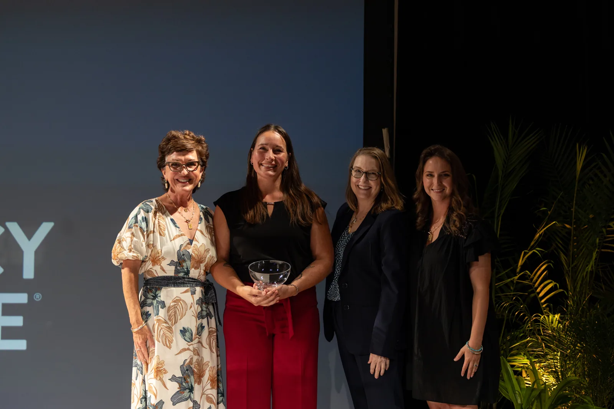

Inform.
We make complex policy issues easier to understand through accessible, balanced resources that encourage thoughtful discussion and informed civic engagement.
Explore policy briefsGet informed. Join the conversation. Strengthen your community.
The Policy Circle is a national, non-partisan 501c3 that informs, equips, and connects women to be more impactful citizens.
We make complex policy issues easier to understand through accessible, balanced resources that encourage thoughtful discussion and informed civic engagement.
Explore policy briefsThrough civic leadership programs and practical learning opportunities, we equip women with the knowledge, skills, and connections to lead in their communities.
Explore CLERWe bring women together through Policy Circles and events to exchange ideas, build relationships, and turn meaningful conversations into civic action.
Learn about Policy CirclesOur Policy Circle Briefs frame an issue, identify the problems to be solved, and provide tools to influence policy in your community. Read a Brief and gather friends or colleagues for informed, constructive conversation.

Build the knowledge, confidence and connections to lead in your community. The Civic Leadership Engagement Roadmap (CLER) is a three-month program combining small-group learning and one-on-one coaching.
Develop your civic knowledge and build a network that supports your next step into leadership.
Explore CLERMilitary communityA Circle member and Civic Leadership Engagement Roadmap (CLER) alum, Ewelina Connolly is running for Allen County Commissioner in Indiana. Through CLER she strengthened her civic knowledge and confidence, while her Fort Wayne Policy Circle became a source of support.
Read her storyNew events will be announced soon. Explore recent conversations and find ways to connect.
Explore recent eventsSign up for our newsletter and get the latest on what’s happening at The Policy Circle, delivered straight to your inbox.